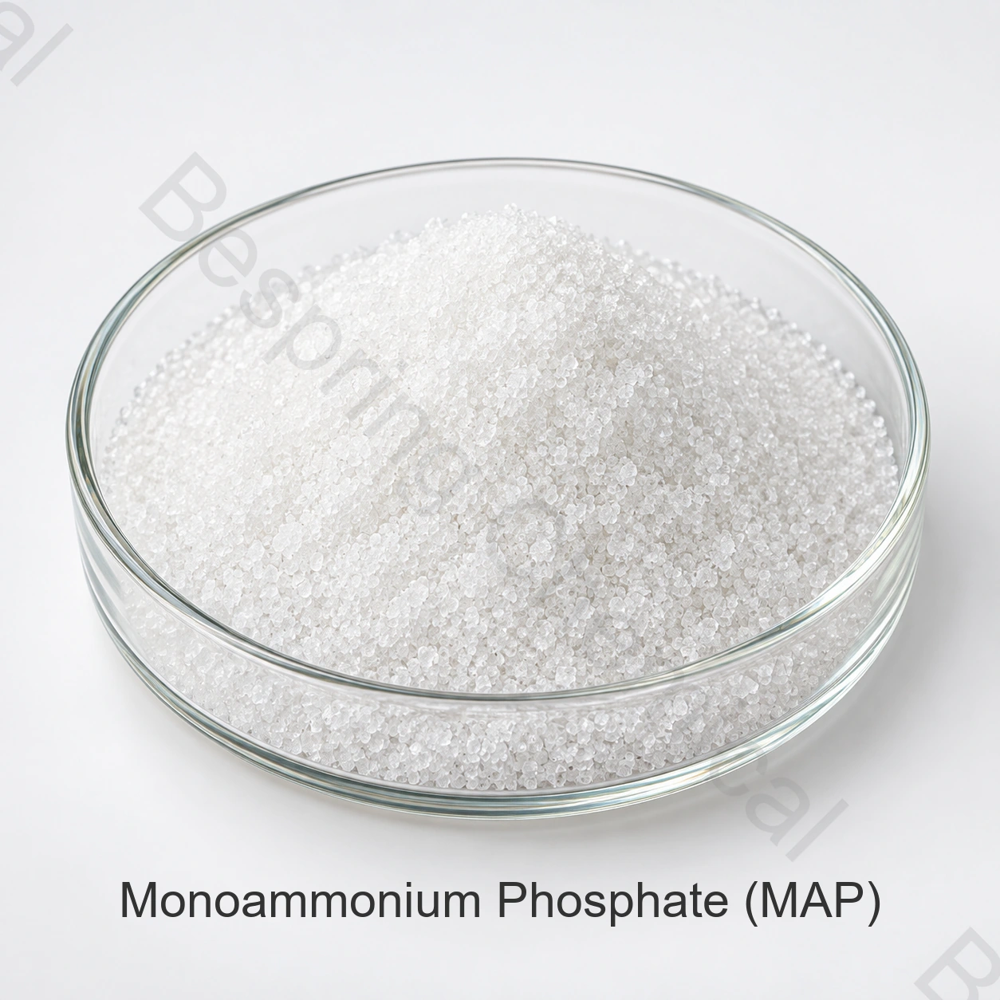

การแสดงตัวและเกรดของโปรดักต์
แจ้งตัวตนที่แน่นอน เกรด รับประกันการวิเคราะห์สารสนเทศ รูปแบบ ประยุกต์ ปริมาณ แพ็คและปลายทาง
Fermiltizer scool as Phosphate ปุ๋ยเกลือ MAP
Nommonium Phosphate เป็นแอมโมเนียมฟอสเฟต ปุ๋ยที่ส่งไนโตรเจนและฟอสฟอรัส สําหรับประยุกต์ใช้ดินโดยตรง

Product image esche และ Package เมื่อมีการเรียงลําดับ
แบ่งปันการวิเคราะห์ รูปแบบ ปุ๋ย ปริมาณ จุดหมายปลายทาง และเอกสาร
ระดับแอพพลิเคชันเทียม
การกําหนดมีให้ส่วนตัวจากการขาย
คุณสมบัติจําเป็น ต้อง วิเคราะห์ และ ทดลอง
ความอิ่มตัวแถบกํากับและตลาดโดยเฉพาะ
คําตอบผลิตภัณฑ์โดยตรง
Nommonium Phosphate เป็นแอมโมเนียมฟอสเฟต ปุ๋ยที่ส่งไนโตรเจนและฟอสฟอรัส สําหรับประยุกต์ใช้ดินโดยตรง
11-52-0 เป็นเรื่องปกติของปุ๋ยพืช; เกรดที่ลดลงอาจแตกต่างกัน อัตลักษณ์เคมีเพียงอย่างเดียว ไม่ได้สร้างเกรดปุ๋ย, รับประกันความอ้วน, ความเหมาะสมของพืช หรือการลงทะเบียนตลาด เทียบแหล่งที่นําเสนอกับรายการที่จําเป็นและโปรแกรมพืช
รายการการเกิดขึ้นอีก
เมื่อ เทียบ กับ ระดับ ที่ เสนอ ให้ แล้ว ข้อ เรียก ร้อง ใน การ สมัคร และ ข้อ เรียก ร้อง ทาง การ ค้า ก่อน ที่ จะ ขอ ตัว อย่าง หรือ สั่ง.
แจ้งตัวตนที่แน่นอน เกรด รับประกันการวิเคราะห์สารสนเทศ รูปแบบ ประยุกต์ ปริมาณ แพ็คและปลายทาง
เปรียบเทียบการกําหนดแหล่งกําเนิด, ประกาศเรื่องสารสนเทศ, COA ปัจจุบัน, แพคเกจ, Incotery และหน้าต่างส่ง
ที่ที่สัมพันธ์กัน ได้รับการยืนยันความคล่องตัว การสลายตัวของน้ํา การเข้ากันได้ของน้ํา การผูกพันธ์ของหุ้น และการเพาะปลูก
ร้องขอ SDS, ข้อกําหนดส่วนตัว หรือ TDS, COA ตัวแทน, Set COA, Proup Profiles, Profiles, และ language-Market ไฟล์.
การตรวจสอบโปรแกรม
นี่เป็นพื้นที่ขยายพันธุ์ ไม่ใช่ทั้งพืชและพืชทั่วไป อัตราการแบ่งอาหาร การอนุมัติป้าย หรือการรับรองผลของพืชพืช
กําหนด ระดับ ฟอสฟอรัส และ ข้อ เรียก ร้อง ของ ไนโตรเจน จาก การ ทดสอบ ดิน และ โครงการ เพาะ ปลูก.
เปรียบเทียบการกระจายของอนุภาคและความแข็งแรงทางกายภาพกับส่วนประกอบอื่น ๆ ส่วนผสม ตรวจสอบแยกผ่านเส้นทางการจัดการ
ใช้คุณสมบัติและตําแหน่งของนักโทรจิตภายในเครื่อง แต่เฉพาะหมายเลขประจําตัวแบบ product เท่านั้น จึงจะไม่สามารถกําหนดอัตราที่เหมาะสมได้
ใช้เฉพาะระดับที่ประวัติการลดความอ้วนและความไม่สะอาด ตรงกับความต้องการการกําเดาของหุ้นเท่านั้น
การเลือกเชิงเทคนิค
ระบุการใช้และเกรดกายภาพ รายการปุ๋ยเม็ดไม่ได้ยืนยันความเหมาะสมกับสารละลายปุ๋ยเข้มข้นตั้งต้นสำหรับระบบให้น้ำ
การ ขอ รับ ไนโตรเจน และ ส่วน ประกอบ P2O5 ที่ ได้ รับ การ ประกาศ ว่า เป็น ส่วน ประกอบ ย่อย ด้วย วิธี การ ต่าง ๆ.
เพื่อ จะ รู้ ว่า มี การ ใช้ อะไร บ้าง ใน การ ผสม และ ทํา ให้ มี การ ใช้ น้ํา ใน การ ทํา ความ ร้อน มาก ขึ้น.
ยืนยันการลงทะเบียนปลายทาง, การระบุชื่อ และข้อจํากัดความไม่เสมอภาคที่เกี่ยวข้อง ทบทวนข้อกําหนดของแหล่งปัจจุบันและตัวแทน COA
เอกสารส่วนตัวทางเทคนิค
บีสปริงเคมีไม่ได้ตีพิมพ์ข้อกําหนดผลิตภัณฑ์สําหรับวัตถุดิบดิบของปุ๋ยนี้ทางออนไลน์ ติดต่อยอดขายสําหรับข้อกําหนดที่ระบุแหล่งในปัจจุบันหรือ TDS และยืนยันการแก้ไขเพิ่มเติม วิธีการวิเคราะห์และเกณฑ์การยอมรับ
ขอลายเซ็นกําหนดในปัจจุบัน หรือ TDS, SDS, วิธีการทดสอบ, ตัวแทน COA และชุด COA
ยืนยันการยืนยันผลการวิเคราะห์พื้นฐานการแสดงออก การจดทะเบียน, ร่องรอยองค์ประกอบ และความต้องการปลายทาง
ทบทวน คู่มือการปลูกพืชของ FAO, คู่มือ แนะ นํา ปุ๋ย ของ FAO ถึง ประวัติเคมีของ NIH Pubchemเหมาะกับการปลูกพืช และทะเบียนปุ๋ย ยังเหลืออยู่ทั้งพืช ดิน สูตร และเขตการปกครอง
โน้ตภาษาอะโกรโนมิค: หน้านี้ของผู้ผลิตไม่ได้กําหนดอัตราการย่อยอาหาร หรือสร้างความเหมาะสมของพืช การเลือกปุ๋ยพื้นฐานและโปรแกรมบนดิน, น้ําและข้อมูลเนื้อเยื่อ, คําแนะนําที่มีคุณภาพ, การทดสอบความเข้ากันได้, การระบุตําแหน่งและความต้องการสิ่งแวดล้อมในท้องถิ่น
การจัดเก็บและการจัดการ
คําถามเกี่ยวกับผู้ซื้อปุ๋ย
Nommonium Phosphate เป็นแอมโมเนียมฟอสเฟต ปุ๋ยที่จําหน่ายไนโตรเจนและฟอสเฟตสําหรับประยุกต์ดินโดยตรง ระบบผสมหรือระบบปุ๋ยที่มีคุณสมบัติเหมาะสม ควรทําตามการตรวจสอบดินหรือเนื้อเยื่อ การแนะนําพืชและใช้กฏปุ๋ย
11-52-0 เป็นเรื่องปกติของปุ๋ยพืช; เกรดที่ลดลงอาจแตกต่างกัน ร้องขอแหล่งอ้างอิงปัจจุบันการรับประกันผลการวิเคราะห์และยืนยันได้ว่าสารอาหารถูกแสดงเป็น N, P2O5 และ K2O หรือเป็นพื้นฐานที่จําเป็นตามกฎหมายอื่น
บีสปริงเคมี ไม่เผยแพร่ผลิตภัณฑ์ปุ๋ย กําหนดในออนไลน์. ติดต่อการขายสําหรับข้อกําหนดที่ระบุแหล่งในปัจจุบัน หรือ TDS, วิธีวิเคราะห์และตัวแทน COA.
ชื่อสารเคมีเพียงอย่างเดียวไม่ระบุเกรด ผลิตภัณฑ์สำหรับปุ๋ย อาหาร และงานเทคนิคมีวัตถุประสงค์ เอกสาร การควบคุมสิ่งเจือปน และข้อกำหนดทางกฎหมายต่างกัน
จัดหาอัตลักษณ์และรูปแบบที่แน่นอน ต้องการการวิเคราะห์การันตีการันตี การใช้ปุ๋ย ปริมาณ แพ็คสินค้า จุดหมายปลายทาง เอกสารลงทะเบียน อินโคเอเชีย และวันส่งมอบสินค้า
เนื้อหาอัปเดต 2026-09-13.
การทําตัวเปรี้ยวที่เกี่ยวข้อง
ดูฟอสเฟตเกรดปุ๋ย และชุดเกลือโปแตสเซียม
หารือเกี่ยวกับข้อกําหนดส่วนตัว เอกสาร ตัวอย่าง และความต้องการทางการค้า
การทบทวนการกระตุ้นและการส่งออก เพื่อการจัดหาสารเคมีระหว่างประเทศ
คู่มือของโปรแกรมและการเลือก: MAP & DAP Model สําหรับเครื่องปรุงอาหาร สําเร็จรูป; MKP vs MAP สําหรับถังหลักทรัพย์ & สต็อก; เครื่องยนต์กรีนเฮาส์ สต็อกแทงค์ที่เข้ากันได้ใช้ เครื่อง ชี้ แนะ สําหรับ คํา ถาม ที่ มี การ พิจารณา; ยืน ยัน ว่า ระดับ ที่ กําหนด ไว้ นั้น เป็น ส่วน ที่ แยก กัน อยู่.
คําแนะนําของโปรแกรมที่เกี่ยวข้อง: ปุ๋ยผสมน้ําดิบ โครงสร้างวัสดุ.
ปุ๋ยที่จัดไว้โดยเฉพาะ
แบ่งปันการรับรองการวิเคราะห์ เกรด และรูปร่าง การใช้ปุ๋ย จํากัดวิกฤต ปริมาณ แพ็ค จุดหมาย และรายการเอกสาร
บอกเราถึงตลาดเกรดและปลายทางของคุณ เราจะได้ยืนยันได้ว่าเอกสารไหน ที่สั่งได้
การอ้างอิงภายนอกไม่ใช่ใบรับรองชุดหรือค่าผลิตภัณฑ์ของเบสปริง